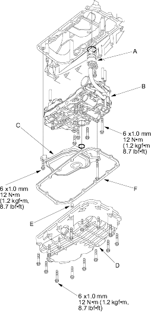

- Install the solenoid harness connector (A) with holding the lower valve body assembly (B).

- Install the lower valve body assembly (eight bolts).
- Install the ATF strainer (C) (two bolts).
- Install the ATF pan (D) with the two dowel pins (E) and new gasket (F).
- Check the solenoid harness connector for rust, dirt, or oil, then connect the connector securely.